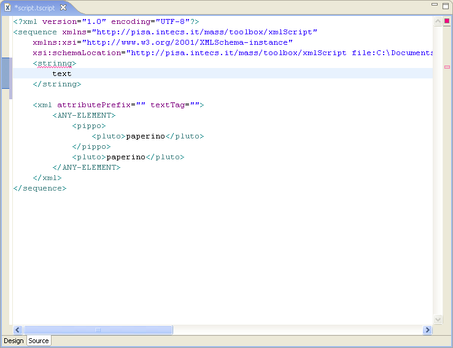
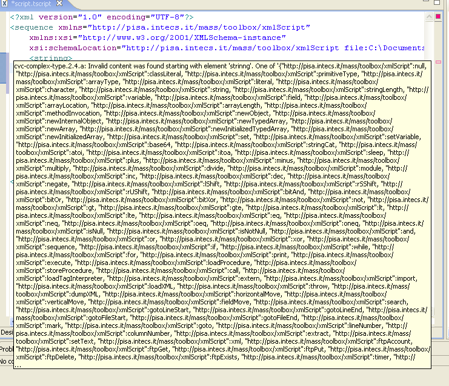

Show show validation errors move to the right of the editor and hoover over one of the displayed red signs.

After a while, a pop up window is displayed, showing validation errors.

When all validation errors are solved, all red marks on the right of the editor frame are removed.